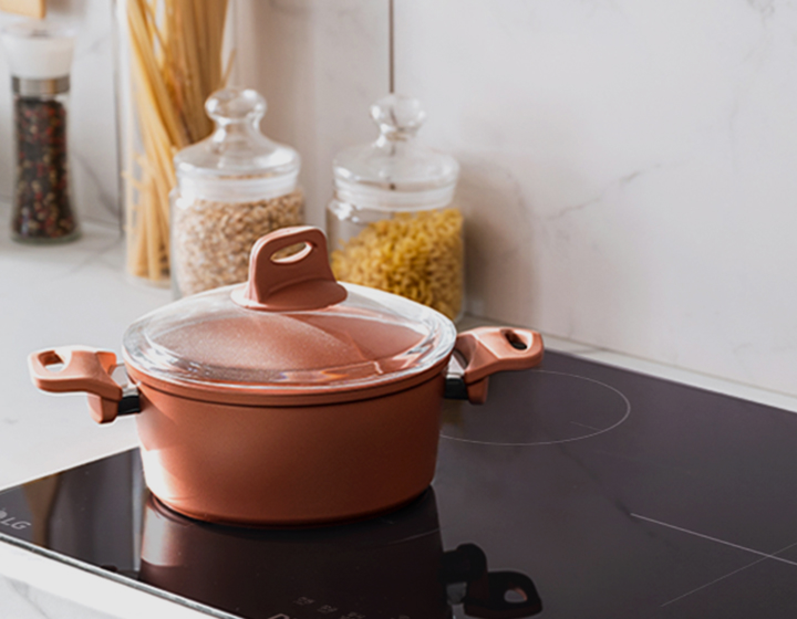
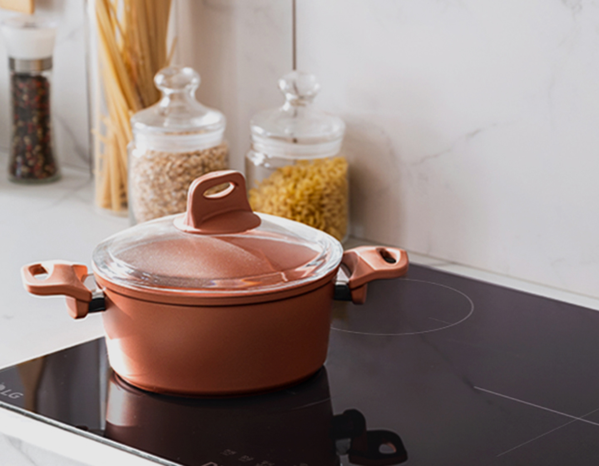

주방전기레인지
 

보다 더 스마트한 일상
LG ThinQ의 시작

보다 더 스마트한 일상, LG ThinQ
씽큐는 사람과 가전을 AI 기술로 연결하여 더 편리하고 놀라운 일상을 만드는 LG전자의 스마트 홈 플랫폼입니다.
*본 콘텐츠는 ThinQ 앱의 콘텐츠입니다.
최근, 실내 환경오염에 대한 관심이 높아지면서 건강관리 가전에 대한 관심도 높아졌죠. 가스레인지를 주로 사용하던 한국도 점차 전기레인지를 선호하고 있어요.
전기레인지를 구입하셨거나, 이미 가스레인지를 사용하고 있지만 전기레인지가 어떤 것인지 궁금해하시는 분들을 위해 쿡탑의 종류와 특장점들을 알아볼게요.

case / 긴 설명의 경우 - mark 있는 타입(item-check-list)
세탁기도 사용하다 보면 청소기가 필요해요. '통살균' 코스는 클리너를 넣고 버튼만 누르면 고온, 스팀으로 청소되는 가장 쉽고 기본인 세탁기 관리법이에요.
-
통살균은 언제하나요? 통살균은 세탁기를 30회 사용하면 통살균/통세청이 필요하다는 ThinQ 앱 알람이 오거나, 세탁기에 TCL 문구가 나타나면 진행하면 되는데요. 알람을 확인하기 어렵다면 한 달에 한 번 주기적으로 통살균을 해주세요
case / 긴 설명의 경우 - border있는 타입
세탁기도 사용하다 보면 청소기가 필요해요. '통살균' 코스는 클리너를 넣고 버튼만 누르면 고온, 스팀으로 청소되는 가장 쉽고 기본인 세탁기 관리법이에요.
통살균은 언제하나요?
통살균은 세탁기를 30회 사용하면 통살균/통세청이 필요하다는 ThinQ 앱 알람이 오거나, 세탁기에 TCL 문구가 나타나면 진행하면 되는데요. 알람을 확인하기 어렵다면 한 달에 한 번 주기적으로 통살균을 해주세요
case / 숫자 들어간 경우(item-check-list 변형)
세탁기도 사용하다 보면 청소기가 필요해요. '통살균' 코스는 클리너를 넣고 버튼만 누르면 고온, 스팀으로 청소되는 가장 쉽고 기본인 세탁기 관리법이에요.
-
1.장마철 빨래건조 눅눅한 빨래를 뽀송하게 건조해주는 코스예요. 습기가 많은 날 사용하기 좋겠죠?
-
1.장마철 빨래건조 눅눅한 빨래를 뽀송하게 건조해주는 코스예요. 습기가 많은 날 사용하기 좋겠죠?
case / 숫자 들어간 경우(item-icon-list 변형)
세탁기도 사용하다 보면 청소기가 필요해요. '통살균' 코스는 클리너를 넣고 버튼만 누르면 고온, 스팀으로 청소되는 가장 쉽고 기본인 세탁기 관리법이에요.
case / 체크 문단 텍스트 여러개 + 체크포인트 경우
건조기의 내/외부 2개의 필터는 항상 깨끗해여 건조능력이 유지되고 냄새도 관리할 수 ~
외부 필터
건조기 사용 전/후 건조기 입구 밑에 있는 내부필터를 꺼내 큰 먼지를 제거해주고~
내부 필터
건조기 사용 전/후 건조기 입구 밑에 있는 내부필터를 꺼내 큰 먼지를 제거해주고~
CHECKPOINT
필터를 물청소 했다면 완전히 말려주세요.
필터가 덜 마른 상태에서 사용하면 건조기 안에서
냄새가 날 수 있으니 꼭 물기가 전부 제거되었는지 확인해 주세요
case / 체크 문단 텍스트 여러개 + 체크포인트 경우 - item-check-list 변형
건조기의 내/외부 2개의 필터는 항상 깨끗해여 건조능력이 유지되고 냄새도 관리할 수 ~
외부 필터
건조기 사용 전/후 건조기 입구 밑에 있는 내부필터를 꺼내 큰 먼지를 제거해주고~
내부 필터
건조기 사용 전/후 건조기 입구 밑에 있는 내부필터를 꺼내 큰 먼지를 제거해주고~
-
CHECKPOINT
눅눅한 빨래를 뽀송하게 건조해주는 코스예요. 습기가 많은 날 사용하기 좋겠죠?
가스레인지와 전기레인지의 특징과 차이를 이해하셨나요? 주방에 적합한 제품을 선택하시는데 참고가 되면 좋겠어요.


LG ThinQ
ThinQ 하나로 더 좋아지는 일상
일상을 더 편하고 스마트하게 만들어주는 씽큐 앱을 지금 바로 만나보세요.
- #ZIP.UP
- #집업프로젝트3
- #턴테이블
- #플랜테리어
- #턴테이블
- #플랜테리어
- #턴테이블
- #플랜테리어
출처 및 고지사항
*이불코스사용 시주의사항 이불코스는 물세탁 표시가 있는 담요 또는 이불을 세탁해주는 코스로, 이불의 부피에 따라 세탁 가능한 무게가 달라질 수 있습니다. (4kg 이하, 크기는 180 220cm 이내일 것) 매뉴얼에 기재된 중량 및 크기를 초과하는 대형 사이즈를 세탁할 경우 세탁물이 손상될 수있습니다. 전기 담요, 커튼, 발 닦이용 발판, 매트 등을 세탁하면 제품과 세탁물이 손상될 수 있습니다. 일반 세탁물과 분리하여 한장씩세탁하세요. 두 장 이상 세탁 할 경우 서로엉키거나 치우침에 의해 세탁이 잘 안되거나 탈수 이상 현상이 발생할 수 있습니다. 고르게 펴서 드럼 내에 80%까지 차도록 넣으세요. 말아서 널으면 불균형으로 제품이 오작동 될 수도 있습니다. 드럼 안으로확실히 들어가도록 넣으세요. 세탁기 문과 고무패킹사이에 놓이면 제품과 세탁물이 손상될 수 있습니다.
*사용하시는제품, 실제세탁방식 등에따라콘텐츠의 내용과는 다른 결과가 나타날 수있으며, 그로 인해 발생하는 손해 등에 대해서 LG전자에게 책임이 없음을 알려드립니다. 해당콘텐츠를 통해 해결이 어려운 경우 전문 세탁 업체에 의뢰하시기 바랍니다